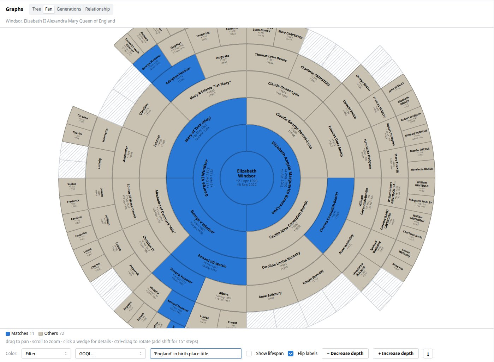
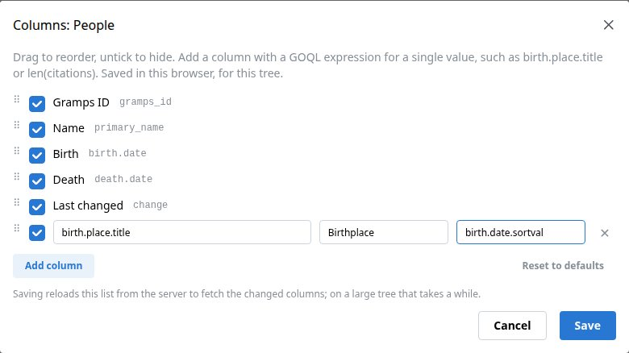
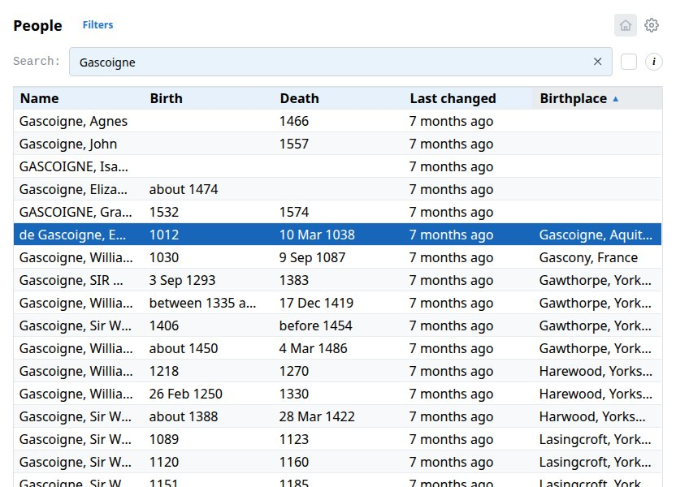
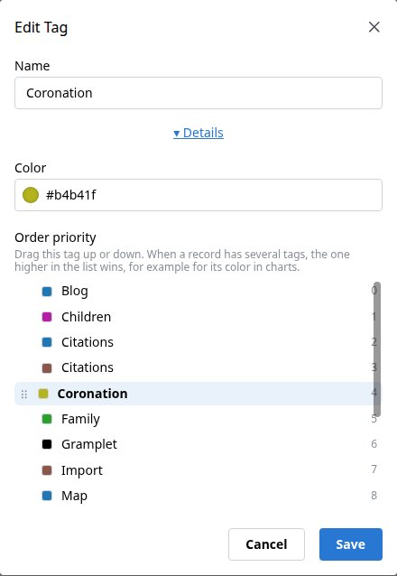
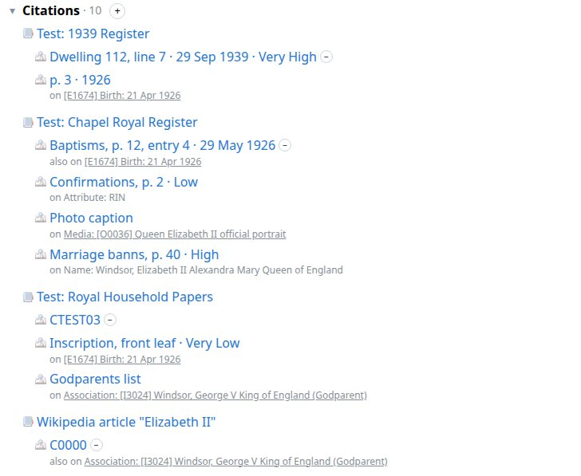
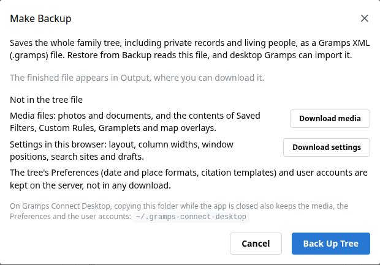

Gramps Connect 1.6: color your charts, sort any column
Gramps Connect 1.6 is out. The biggest change is in the charts: they can now show what you know about each person, not just who they are. Lists got more flexible too, along with smaller changes for putting things in the order you want and for keeping a safe copy of your tree.
Color your charts
The fan, tree and Generations charts each have a Color menu, and 1.6 adds three new choices to it.
- Tag colors each person with their tag’s color, so the people you’ve tagged “ToDo”, “Brick wall” or “Verified” stand out at a glance. This answers a long-standing Gramps request.
- Attribute colors people by one of their attributes. Numbers shade from light to dark, which suits a research level such as 1 to 6 for how fully each ancestor has been researched. Other values, such as an occupation, each get their own color.
- Filter highlights the people a saved filter matches, or the people a GOQL query you type in matches.

'England' in birth.place.title. The legend at the bottom counts 11 matches and 72 others.A legend below the chart shows each color and how many people have it. When you export a chart as an image or PDF, the legend comes with it. Your color choice is remembered for next time, for each kind of chart.
Sort by any column, or by two
Every column in every list can now be sorted: click the header, and click again to reverse. Dates sort as dates, and names follow your tree’s name format. When several records share a value, they’re listed in a sensible order among themselves: people born on the same day by name, events at the same place by Gramps ID.
Columns you add yourself in the Columns dialog now have a Then sort by box. Clicking the column sorts by it first and then by what you put there. That’s an easy way to group records by one thing and order each group by another.

birth.place.title) that then sorts by birth date.
Put things in your own order
A record’s notes and citations are kept in the order they’re listed, which is also the order Gramps’ reports and exports print them in. You can now drag them into place by their grip (⋮⋮) in any edit dialog. In the panel beside a record, you can drag its Notes, Discussions and Stories the same way. Each move there is saved at once and can be undone from the record’s History.
When a record has several tags, the one higher in the tag list wins, for example for its color in a chart. A tag’s Edit dialog now shows the whole tag list under Order priority. Drag the tag to where it belongs. Records list their tags in that order everywhere.

Citations, grouped by source
The Citations section beside a record now groups citations under their sources. It includes the citations on the record’s events, names, media and associations too, and says which one each is attached to. The Citations list also has a standard Date column.

Make Backup
Family Trees → Make Backup… saves your whole tree as a Gramps XML file, the counterpart to Restore from Backup. It includes private records and living people, and desktop Gramps can import the file too. The dialog also says plainly what that file doesn’t hold, and offers buttons to download those separately: your photos and other media, and your settings in this browser.

And more
- The status bar shows “showing 3 / 4,668” once a list has fully loaded, so you can see how much of the tree a search or filter is showing.
- If you open a record that someone just deleted, the panel says so calmly instead of showing an error.
Try it
- Download Gramps Connect 1.6 for Windows, macOS or Linux, or take the narrated tour.
- The documentation has the details: Charts, Sorting a list, Dragging to reorder and Make Backup.
- Questions and ideas are welcome on the Gramps Discourse forum.